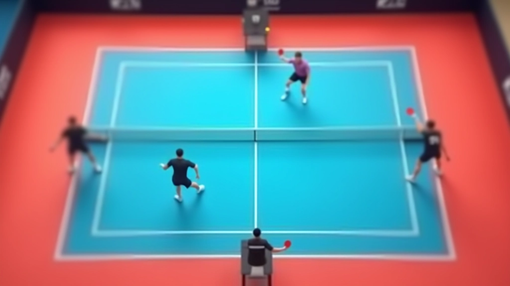
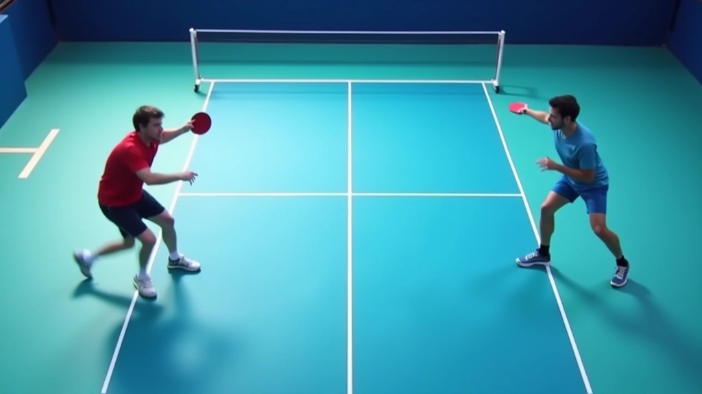
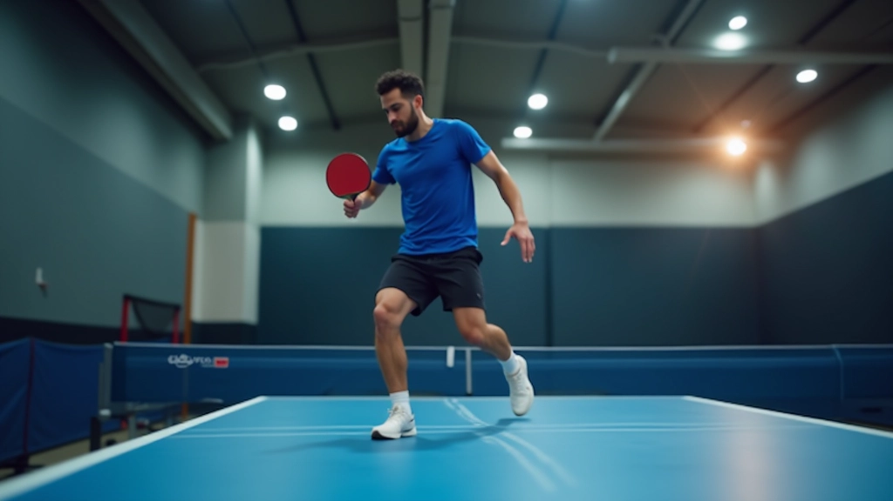
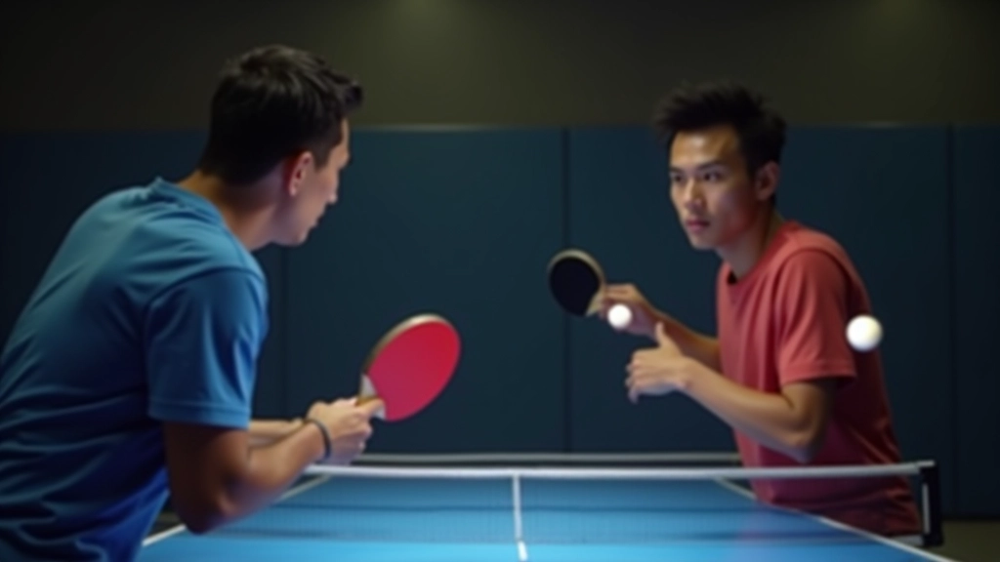

نظام الإشارات والتواصل الفعال
تطوير نظام إشارات واضح بينك وبين زميلك، مع تقنيات التواصل الصامت التي تزيد من فر...
تعلم كيفية التنسيق الفعال بين اللاعب الأمامي والخلفي، وتوزيع المسؤوليات على الملعب بشكل صحيح
لعب الزوجي في تنس الطاولة ليس عن لاعبين يقفان بجانب بعضهما البعض. الأمر كله يتعلق بالتنسيق الدقيق والتواصل المستمر. عندما يعرف كل لاعب دوره بوضوح — من يغطي المنطقة الأمامية ومن يتولى الخلفية — يصبح فريقك أقوى بكثير. التنسيق السيء يعني ثغرات على الملعب. التنسيق الجيد يعني فوز متكرر.
هنا، نركز على الأساسيات: كيف يقف اللاعبان، كيف يتحركان، ومن المسؤول عن كل منطقة من الملعب. إنها أساسات قوية تُبنى عليها كل الحركات المتقدمة.


اللاعب الأمامي يقف بالقرب من الشبكة — حوالي 1.5 متر منها. هذا يسمح له بالتدخل السريع والضربات القصيرة. يجب أن يكون جسده مرتاح قليلاً، ركبتاه منحنيتان، ويده جاهزة للعب.
اللاعب الخلفي يقف بعيداً عن الشبكة، عادة بين خط النهاية وخط منتصف الملعب. دوره توفير الدعم والضربات الطويلة. لا تنسَ: التنسيق يعني أنهما يتحركان معاً، وليس بشكل منفصل.
هذا الدليل يقدم معلومات تعليمية عامة عن تقنيات التنسيق في تنس الطاولة الزوجي. كل لاعب له احتياجات مختلفة وقد يتطلب تدريباً مخصصاً. ننصح بالعمل مع مدرب متخصص لتطبيق هذه المبادئ على مستواك الفردي.
المنطقة الأمامية — حول الشبكة — تنتمي للاعب الأمامي. الكرات القصيرة، الضربات القريبة، والتسديدات الدقيقة كلها مسؤوليته. يجب أن يكون قاضياً وحاسماً هنا.
المنطقة الخلفية — من خط المنتصف إلى خط النهاية — للاعب الخلفي. الضربات الطويلة، الكرات العالية، والدفاعات البعيدة. كلاهما يتعاون في المنطقة الوسطية. الاتفاق المسبق يمنع الالتباس والأخطاء.


التنسيق لا يعني البقاء في نفس المكان. عندما تأتي الكرة للاعب الأمامي، يتحرك الخلفي خطوة أو خطوتين للأمام للاستعداد. عندما يضرب الخلفي، يتراجع الأمامي قليلاً. هذه الحركات الصغيرة تحافظ على التوازن والجاهزية.
الحركة المنسقة تعني أيضاً الحركة الجانبية. إذا اتجهت الكرة لليسار، يتحرك كلاهما للجانب معاً. لا تترك زميلك وحده. التدريب على هذا يحتاج وقتاً، لكن النتيجة تستحق.
حافظ على مسافة ثابتة بينك وبين زميلك — حوالي متر ونصف
تحرك بخطوات صغيرة سريعة، وليس خطوات كبيرة بطيئة
ابقَ دائماً مع زميلك — حركتك تتبع حركته
يجب أن تعرف زميلك ماذا تقصد دون كلام. إشارة بسيطة — رفع الرأس، لمسة على الكتف — تقول: "أنا هنا، أنت هناك، جاهز؟" التواصل الصامت يحدث في أثناء اللعب. الكلام يحدث في فترات التوقف.
اتفق مع زميلك على نظام إشارات بسيط. مثلاً: رفع اليد اليمنى معناها أنت تغطي الجانب الأيمن. هذا الوضوح يمنع الالتباس ويجعل اللعب أسرع وأقوى. ستجد أن معظم الفرق الجيدة لديها نظام خاص بها.

قف أنت وزميلك في الوقفات الصحيحة. مرر الكرة بينكما ببطء دون تحرك. ركز على الاتوازن والمسافة. كرر هذا 50 مرة على الأقل.
تحرك أنت وزميلك معاً جانباً لليسار، ثم لليمين. اللاعب الأمامي يتحرك ثلاث خطوات، والخلفي يتحرك ثلاث خطوات معه. كرر 20 مرة في كل اتجاه.
لاعب ثالث يرمي كرات عشوائية. أنت وزميلك تحددان سريعاً من يأخذها. هذا يقوي ردة الفعل والتنسيق تحت الضغط. ابدأ ببطء ثم سرّع.
لعبة حقيقية لكن ببطء. لا تسعَ للفوز. ركز فقط على الحركة المنسقة والتغطية الصحيحة. كلما لعبت أبطأ، تعلمت أكثر.
التنسيق في تنس الطاولة الزوجي ليس أمراً معقداً. إنه بسيط جداً: قف في المكان الصحيح، تحرك مع زميلك، تواصل معه بوضوح. هذه الأساسات ستبقى معك طوال حياتك في اللعبة. كل الحركات المتقدمة مبنية عليها.
ابدأ اليوم. مارس هذه التمارين مع زميلك. كن صبوراً. بعد أسبوعين أو ثلاثة، ستلاحظ الفرق. فريقك سيصبح أقوى. اللعب سيصبح أسهل. والانتصارات ستأتي بشكل طبيعي.
هل تريد معرفة المزيد عن تقنيات التنسيق المتقدمة؟
اقرأ نظام الإشارات والتواصل الفعال
فريق المحتوى والمراجعة
تم إعداده بواسطة فريق شمس الطاولة للمحتوى، المتخصص في أدلة عملية وسهلة المتابعة لتحسين التنسيق في لعب الزوجي.
تطوير نظام إشارات واضح بينك وبين زميلك، مع تقنيات التواصل الصامت التي تزيد من فر...

تدريبات متقدمة للحركة السريعة والتغطية المتبادلة بين الزميلين لتقليل الثغرات على...

بناء خطط هجومية قوية مع زميلك، وتنفيذ تسلسلات ضربات منسقة تغيّر مسار اللعبة لصال...